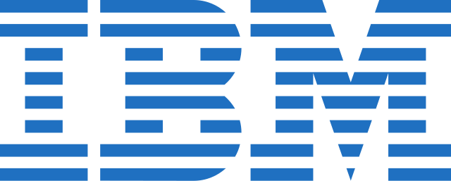

JOBS OFFERED BY 
IBM offers a variety of roles for B.Tech Computer Science Engineering (CSE) graduates, providing opportunities to work on cutting-edge technologies and innovative projects. Below is an overview of key positions, including role descriptions, required skills, and estimated salary ranges:
- Associate Systems Engineer
- Role Overview:
Engage in the design, development, and maintenance of software applications. Collaborate with cross-functional teams to deliver client-specific solutions.
- Skills Required:
->Proficiency in programming languages such as Java, Python, or C++.
->Understanding of software development life cycle (SDLC) methodologies.
->Strong problem-solving and analytical abilities.
- Salary Range:
Approximately ₹1.1 to ₹6 lakhs per annum.
- Software Developer
- Role Overview:
Develop, test, and deploy software solutions to meet client requirements. Ensure the performance, quality, and responsiveness of applications.
- Skills Required:
->Expertise in software development frameworks and tools.
->Ability to write clean, maintainable, and efficient code.
->Familiarity with version control systems like Git.
- Salary Range:
Approximately ₹7.5 to ₹25 lakhs per annum.
- Application Developer
- Role Overview:
Design and build applications for various platforms. Work closely with clients to understand their requirements and translate them into functional applications.
- Skills Required:
->Proficiency in application development languages and frameworks.
->Experience with database management systems.
->Strong debugging and problem-solving skills.
- Salary Range:
Approximately ₹1.8 to ₹10 lakhs per annum.
- Data Scientist
- Role Overview:
Analyze complex data sets to derive actionable insights. Develop predictive models and machine learning algorithms to solve business problems.
- Skills Required:
->Strong foundation in statistics and mathematics.
->Proficiency in data analysis tools and programming languages like R or Python.
->Experience with data visualization tools.
- Salary Range:
Approximately ₹4.3 to ₹17.2 lakhs per annum.
- UI/UX Designer
- Role Overview:
Design intuitive and engaging user interfaces. Enhance user experience by applying user-centered design principles.
- Skills Required:
->Proficiency in design tools like Adobe XD, Figma, or Sketch.
->Understanding of user experience principles and methodologies.
->Ability to create wireframes, prototypes, and visual designs.
- Salary Range:
Approximately ₹4.6 to ₹12.5 lakhs per annum.
- Full Stack Developer
- Role Overview:
Develop both front-end and back-end components of web applications. Ensure seamless integration and functionality across the entire stack.
- Skills Required:
->Proficiency in front-end technologies (HTML, CSS, JavaScript) and back-end languages (Node.js, Java, Python).
->Experience with databases like MySQL, MongoDB, or PostgreSQL.
->Familiarity with RESTful APIs and web services.
- Salary Range:
Approximately ₹3.6 to ₹13.8 lakhs per annum.
- DevOps Engineer
- Role Overview:
Implement and manage continuous integration and continuous deployment (CI/CD) pipelines. Automate processes to enhance operational efficiency.
- Skills Required:
->Knowledge of DevOps tools like Jenkins, Docker, and Kubernetes.
->Experience with cloud platforms such as AWS, Azure, or IBM Cloud.
->Strong scripting skills in languages like Bash or Python.
- Salary Range:
Approximately ₹2.5 to ₹6 lakhs per annum
- Digital Marketing Executive
- Role Overview:
Develop and execute digital marketing strategies to enhance online presence. Utilize various digital channels to drive traffic and engagement.
- Skills Required:
->Proficiency in digital marketing tools and platforms.
->Understanding of SEO, SEM, and content marketing.
->Ability to analyze metrics and adjust strategies accordingly.
- Salary Range:
Approximately ₹4 to ₹7 lakhs per annum.
Job Locations:
India:
IBM has offices in major cities including Bangalore, Hyderabad, Mumbai, Pune, Chennai, and Delhi.
Onsite (Abroad):
Opportunities may be available based on project requirements and individual performance.
Note: Salary figures are approximate and can vary based on factors such as location, individual qualifications, and market conditions. For the most accurate and up-to-date information, it's advisable to consult IBM's official career portal or contact their HR department directly.
For more details on current openings and application procedures, visit IBM's Careers Page